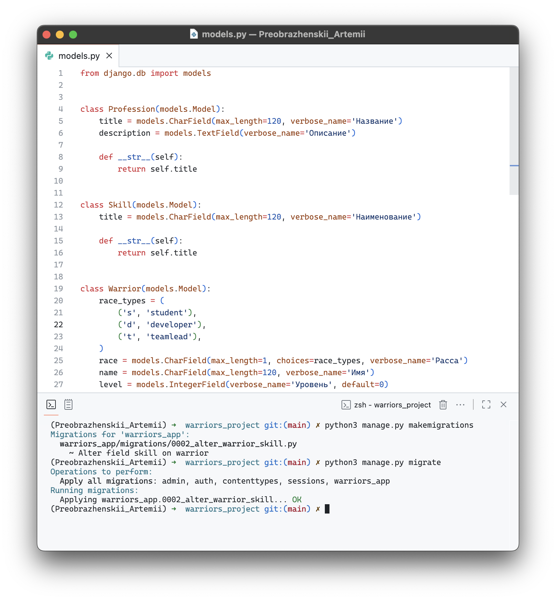

Практическая работа 3.2
Цель работы
Закрепить навыки разработки REST API на Django REST Framework
Ход выполнения
Постановка задачи
В рамках задания требовалось:
1. Реализовать API для добавления и просмотра скиллов.
2. Реализовать API для работы с воинами, включающее следующие функции:
- вывод полной информации о всех воинах и их профессиях (в одном запросе);
- вывод полной информации о всех воинах и их скилах (в одном запросе);
- вывод полной информации о конкретном воине по id, включая его профессию и скиллы;
- удаление воина по id;
- редактирование информации о воине.
Структура приложения
В рамках проекта создано приложение warriors_app, включающее следующие компоненты:
- models.py — описывает сущности: Воин, Профессия, Скилл, а также промежуточную таблицу для связи воинов и скиллов;
- serializers.py — содержит сериализаторы для преобразования объектов моделей в формат JSON и обратно;
- views.py — реализует представления на основе классов APIView и GenericAPIView для обработки запросов;
- urls.py — описывает маршруты для взаимодействия с API.
Эндпоинты
Были реализованы следющие ручки:
1. GET /warriors/list/ — получение полного списка всех воинов.
2. POST /warriors/create/ — добавление нового воина.
3. GET /warriors/professions/ — вывод полной информации о всех воинах и их профессиях (в одном запросе).
4. GET /warriors/skills/ — вывод полной информации о всех воинах и их скиллах (в одном запросе).
5. GET /warrior/<id>/ — вывод полной информации о конкретном воине по id
6. DELETE /warrior/<id>/delete/ — удаление конкретного воина по id
7. PUT /warrior/<id>/update/ — редактирование информации о воине по id
8. POST /warrior/<id>/add_skill/ — добавление нового скилла конкретному воину
9. POST /profession/create/ — добавление новой профессии.
10. GET /profession/list/ — получение списка всех профессий.
11. GET /skills/list/ — получение списка всех скиллов.
1 задание
Для работы с эндпоинтами использовались модели Warrior, Profession, Skill и SkillOfWarrior.

Были созданы views для добавления и просмотра скиллов и следующие сериализаторы


Протестировать работу вьюх можно в браузере


2 задание
С на основе generic были созданые следующие представления

Нам также нужны сериализаторы, чтобы выводить информацию о всех воинах и их скилах, о всех воинах и их профессиях, а также детализированную инфу о каждом.

Результаты представлены ниже


Вывод
В ходе практической работы были реализованы и протестированы REST API-эндпоинты для работы с воинами, их профессиями и скиллами.